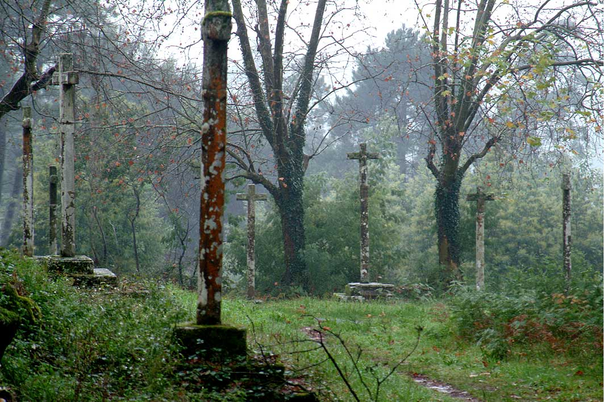
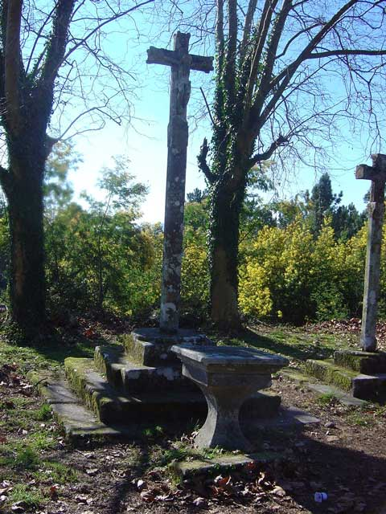

  Cruceiro de Sorribas Tipo: A Cruceiro tipo I Calvario Lugar: Santo Tomás de Sorribas Denominación: Cruceiro tipo I Calvario Tipo: I Historia: Representa a crucifixión de Cristo no medio dos dous ladróns.